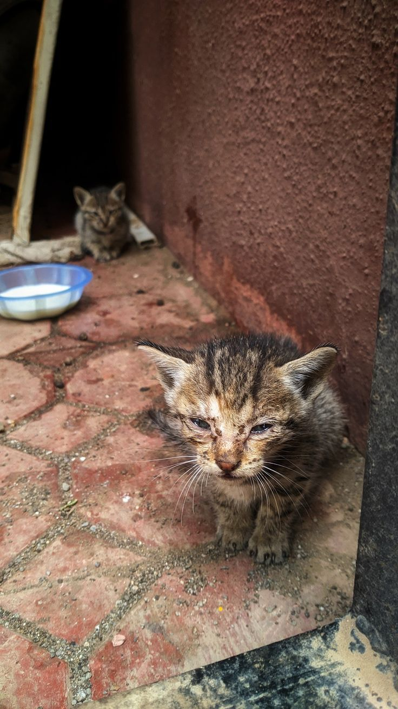
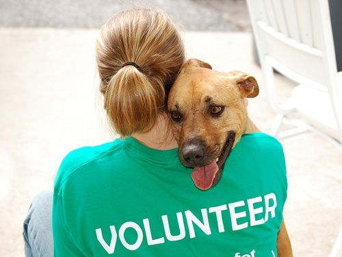

Adopciones online
Sabemos que para algunas personas es complicado desplazarse...
Echa un ojo a nuestros peludosEn Dejando Huella trabajamos día a día para ofrecer ayuda, atención y oportunidades tanto a los animales como a las personas que quieren formar parte de su cambio. Estos son algunos de los servicios que ofrecemos.
Sabemos que para algunas personas es complicado desplazarse...
Echa un ojo a nuestros peludosPara los que quieran conocer en persona al animal y comprobar su compatibilidad con él, ofrecemos otra forma de adopción
987654321Antes de decidirte por adoptar, recomendamos leer la política de adopción
Algunos no podéis adoptar a una mascota por distintos motivos (planes futuros, motivos personales, etc.) pero os gustaría darle un hogar a algún peludo. Para esos casos, ofrecemos la acogida, que consiste en "adoptar" a un animal hasta que se le encuentre un nuevo hogar, evitando que tenga que vivir en el refugio hasta encontrar a una familia, y asegurando que crezca en un espacio lleno de amor. Además, ofrecemos la posibilidad de tramitar a posterior tu acogida como adopción si acabas decidiéndote por adoptar al animal que acoges en tu casa.
| Aspecto | Adoptar | Acoger |
|---|---|---|
| Duración | Indefinida, permanente | Temporal, hasta que encuentre hogar definitivo |
| Compromiso legal | Requiere trámite legal de adopción | No requiere trámite legal |
| Edad del animal | Cualquier edad, aunque suelen preferirse cachorros o jóvenes | Cualquier edad, según necesidades del refugio |
| Objetivo | Dar un hogar definitivo y estable | Brindar cuidados temporales mientras espera adopción |
| Requisitos | Evaluación del hogar, documentos legales, entrevista | Espacio temporal, tiempo para cuidar, pero menos formalidades |
| Beneficios | Compromiso total con el animal, vínculo permanente | Ayudar al refugio y al animal, experiencia de convivencia sin permanencia |
Para más información, visítenos en nuestro horario de atención
Con fines educativos, ofrecemos visitas guiadas y gratuitas por el refugio para que los niños y mayores puedan concienciar y sensibilizar sobre la protección animal, además de poder conocer de cerca nuestro trabajo y puedan aprender de el. Para más información escríbenos al correo y nos pondremos en contacto con su centro educativo.
refugiodejandohuella@gmail.com

Contamos con un equipo de voluntarios y voluntarias que colaboran con el rescate y la atención de animales abandonados o maltratados. Si detectas un caso o descubres a alguna camada que necesite ayuda, ponte en contacto con nosotros.
Ofrecemos plazas de prácticas para estudiantes de veterinaria, educación ambiental o formación profesional relacionada con el cuidado animal. ¡Puedes aprender mientras ayudas! Pon a tu centro educativo en contacto con nosotros si estás interesado.
